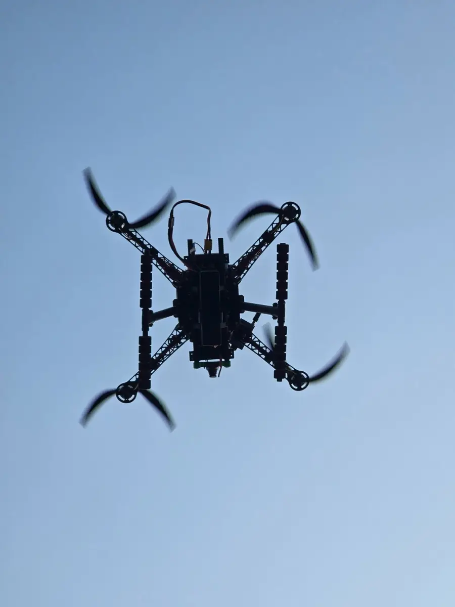

Home / Problems We Solve / Monitoring large crowds
SecurityCrowd monitoring drones for large events and gatherings
At large events, ground cameras and officers can’t see how the whole crowd is moving.
Police, event organisers, and religious and public gathering authorities.
Dangerous build-ups form where nobody on the ground can see them.
A live aerial view shared with the control room, so staff can act earlier.
How are drones used for crowd control?
Crowd problems often start with a build-up that nobody on the ground can see. A view from above shows how people are moving, so organisers can act earlier.
Drones are used for crowd monitoring: seeing density and movement so staff can respond. The value lies in the single, shared view.
Flying near people needs care. Permissions, safe distances and privacy rules should be settled before the event, not on the day.
Who faces this problem
Police and public safety
A single view helps direct officers to where they are needed.
Event organisers
Entry points, routes and open areas can all be watched from above.
Large public gatherings
Festivals and processions move, so fixed cameras can miss part of the crowd.
Signs you have this problem
- Your events draw crowds too large to see from the ground
- Build-ups are noticed only after they become a problem
- The control room relies on radio descriptions
- Fixed cameras leave blind spots
What to look for
- A stable, zoomable camera
- Encrypted live video to the control room
- Enough endurance, or a tethered option
- A plan for permissions and safe flight areas
The main causes
Limited view
People at ground level see only those around them.
Fixed cameras
They cover set spots, and the crowd moves.
Scattered reports
Radio updates are hard to combine into one picture.
Before and after
How to solve it, step by step
- 1
Plan
Agree routes, permissions and safe flight areas.
- 2
Position
Choose viewpoints that avoid flying over people where restricted.
- 3
Watch
Stream live video to the control room.
- 4
Act
Direct staff to where they are needed.
Common mistakes
- Leaving permissions until just before the event
- Planning routes that fly directly over people without checking the rules
- Sending video to the control room with no one assigned to watch it
- Forgetting a privacy and footage-retention policy
Questions to ask a supplier
- What permissions do we need for this location and date?
- Can the video reach the control room securely?
- How long can the aircraft stay on station, and what covers the gaps?
- How will footage be stored, and who can see it?
What to use
Common questions
Can police use drones for crowd monitoring?
Yes, subject to applicable rules. Our surveillance platforms support public safety and crowd monitoring. Check current DGCA and local requirements.
Do I need permission to fly at an event?
Usually you should expect to. Rules depend on the location and airspace, so check DGCA requirements and local authorities early.
Which drone suits a long event?
A tethered drone suits one long, fixed watch, while a free-flying drone suits moving to different areas.
What should a drone watch for in a crowd?
Mainly density and movement: narrowing routes, growing build-ups and flows heading in opposite directions. People on the ground should then assess the situation and respond.
Who should operate the drone at an event?
A trained pilot, working with a separate person who watches the video and talks to the control room, so that flying and observing don’t compete for attention.
Related problems
Drone too bulky to carry
A drone left in the vehicle is no use. Small teams need one they can carry and launch quickly.
Read this guideGPS jamming and spoofing
Satellite signals are easy to jam, spoof or block, and a drone that depends on them can drift or be lost.
Read this guideToo much ground, too few eyes
Borders, pipelines and large sites are too long to cover on foot or from fixed posts alone.
Read this guideFacing this problem?
Tell us about your mission and our engineers will suggest the right platform or configuration.